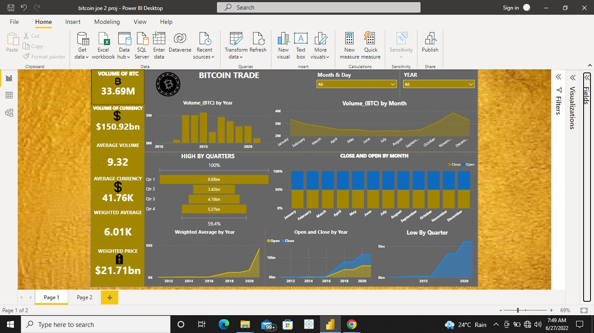
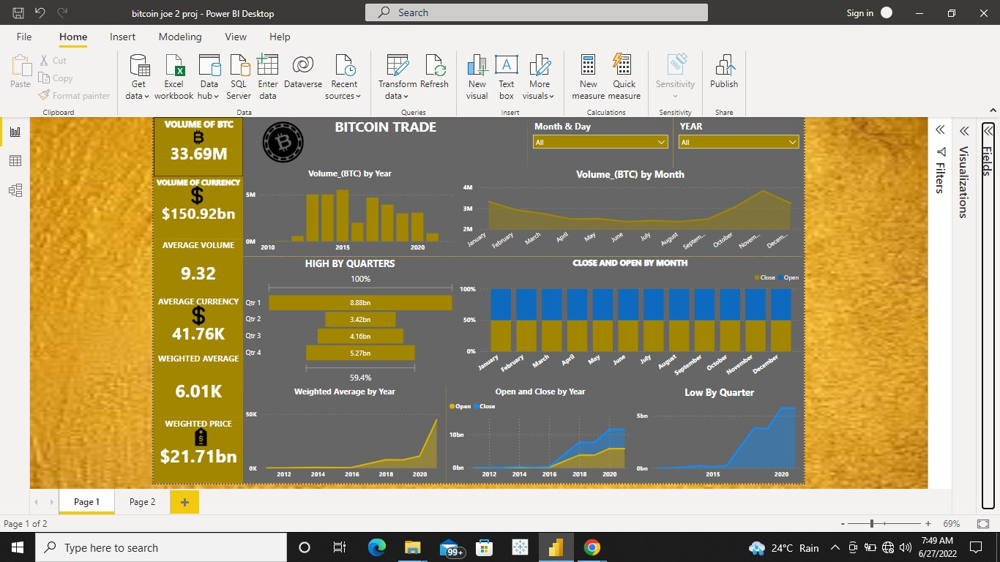
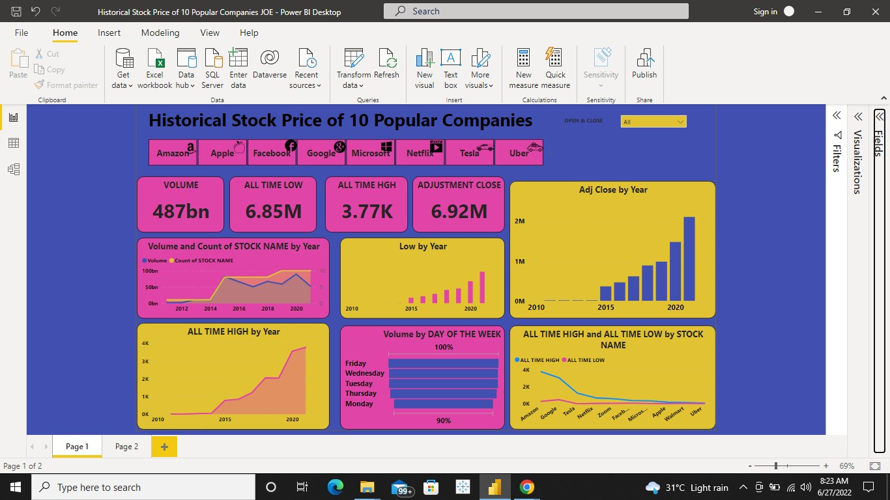
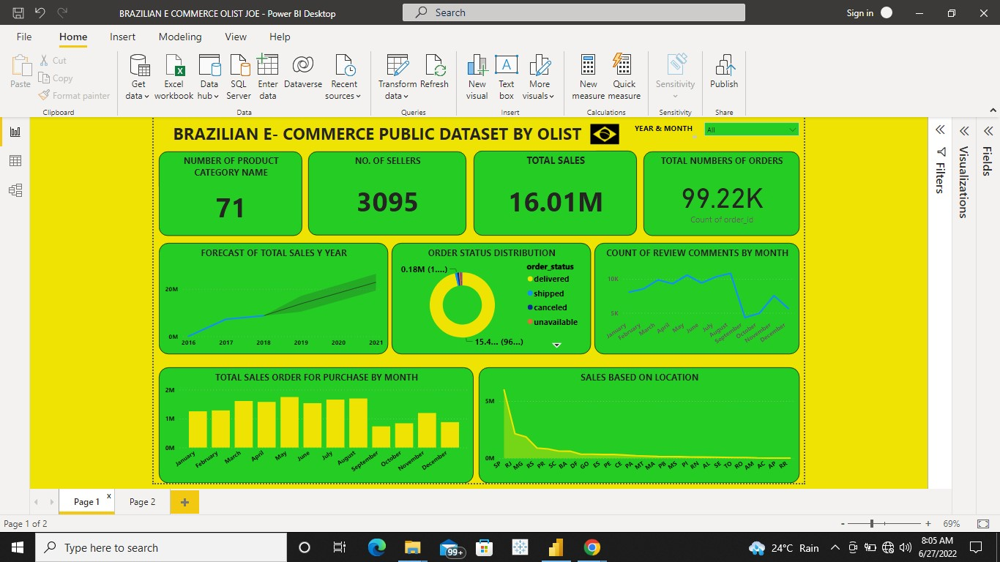
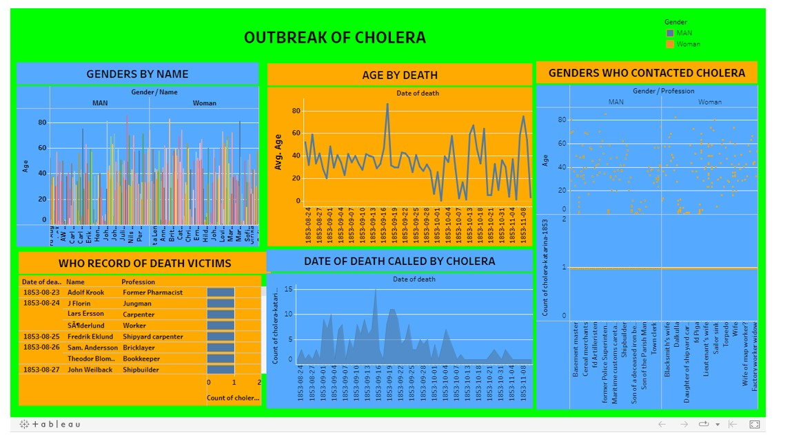
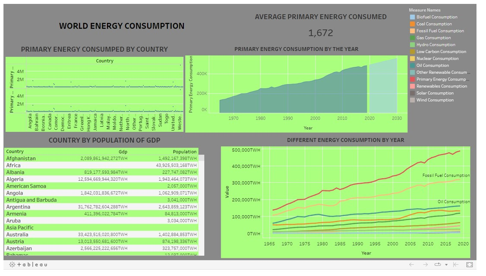
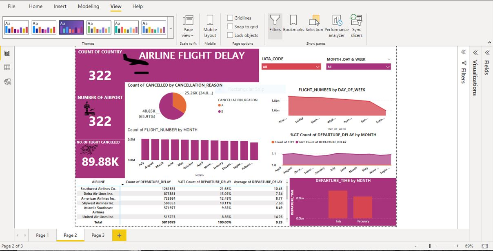

Feburary 25, 2023
I"m passoniate versatile individual with experience in transforming, organising data, wrangling, & collecting data for analysis
to help organisation or Business enterprises to make a data driven descision. However I have a proficient and a proper understanding
use of different tools use for effective data analysis which include: Excel, powerBi, PostGre, Tableau, MySql,Python & problem solving
Skill. Morealso, I also posses strong anlytical presentation and communication skills.
 

These interactive dashboard was created using Power Bi to create a visual representation of Bitcoin report from 2011 to 2021.

My dashboard was created using PowerBi to create a visual and an interactive dashboard of HISTORICAL STOCK PRICE OF 10 COMPANIES (Amazon ,Apple, Facebook, Google, Microsoft, Netflix, Tesla, Uber, Zoom and Walmart).

My dashboard was created using Power Bi to identify and analyze a visual representation of the Nigeria Centre for Disease Control (NCDC) report. These was declared by World Health Organization about the covid-19 outbreak as a global pandemic.

My dashboard was created using Power Bi to identify and analyze a visual representation of Brazilian E-Commerce Public dataset of order made at Olist store.

My dashboard was created using Power Bi to identify and analyze a visual representation of Restaurant rating in Mexico by real consumers from 2012, which include additional information about each restaurant and their cuisine and consumers preference.

My dashboard was created using Power Bi to identify and analyze a visual representation of New York city Taxi Trip

My dashboard was created using Excel to identify and analyze a visual representation of SALES REPORT from 2018-2019 which allows the interaction between customers and business management.

My dashboard was created using TABLEAU to identify and analyze a visual representation of Outbreak of Cholera in Stockholm 1853.

My dashboard was created using TABLEAU to identify and analyze a visual representation of Shark attack reported over the past 100yrears.

My dashboard was created using TABLEAU to identify and analyze a visual representation of World Energy Consumption of different countries.

. My dashboard was created using Power Bi to identify and analyze a visual representation of United State of America Flight delay and cancellation in 2015.